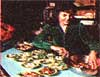

Leona's Fabulous Fresh Fruit Salad
She is the proprietor of the Merry Miller restaurant and health food store.
July/August 1979
We've already told you (in Mother Nos. 46 and 49) that Leona Farguhar's Merry Miller restaurant in Hendersonville, North Carolina serves delicious vegetarian sandwiches and soups. Her's another reason why Ms. Farguhar's patrons keep comin' back for more.....
"Food should took good, taste good, and be good for you," says Leona Farquhar as she carefully prepares her luscious fresh fruit salad. Well, Leona's own fixin's certainly exemplify these "Three Goods". But perhaps her list ought to include a fourth "should" . . . because just gazing at Ms. Farquhar's magnificent, culinary creations is enough to make a body feel good, besides!
There's no way around it: The proprietress of the Merry Miller-a restaurant and health food store which is located right in MOTHER's own Hendersonville, North Carolina-makes an absolutely delicious fruit salad. In fact . . . some of Leona's many admirers come to her establishment from "states away" just to sink their teeth into the savory gourmet combination.
Yet now-either from the kindness of her heart or to help her faraway friends cut their gasoline costs -Leona has graciously agreed to share her fruit salad guidelines with MOTHER's readers. So if you love good eating . . . take this opportunity to master the art of preparing a distinctly mouthwatering delicacy. You'll soon be feasting on some of the tastiest-and most healthful-morsels in creation.
The first step in preparing the Merry Miller fresh fruit salad is simply to select four different fruits. It's not really important exactly what "starter" foods you use: The ingredients might conceivably be boysenberries, mangoes, casabas, and soursops, or-as shown in the accompanying photos-papayas, pears, grapes, and strawberries. What matters most is that you choose only the very freshest and best examples of each ingredient (in a combination and in proportions that are appealing to you). Slice the four fruits into good-sized chunks-not mushy tidbits-so you'll be able to enjoy each segment's texture and taste. Then "drizzle"-as Leona would say-a small amount of honey over the pieces (to help all that fruit keep its light-colored, just-cut look) . . . and gently toss the tangy produce-and-honey combination in a large bowl.
Next, prepare some individual serving dishes for the fourfold fruit delight. Layer the bottom of each container with "the most perfect" piece of leaf (not head) lettuce you can find . . . and drop a fresh spoonful of a very light cheese-like ricotta or homemade cottage-on the greenery.
When that base is ready, arrange exactly seven slices of ripe banana around the edge of your cheese center. (Why seven pieces? "Because I insist on ill" Leona answers. "And because that's how many slices are needed to fill the arrangement perfectly. Besides, seven is a beautiful-and mystic- number.") Then place one big, scrumptious spoonful of the four-fruit combination over and around this colorful display.
Now you're all set to fix-and pour on -a bit of the Merry Miller's famous Halvah Dressing. (And as Leona justly notes, this creamy nectar makes "one halvah salad"!) The delicious topping is hardly difficult to prepare: Simply fill a pint jar about two-thirds full of safflower (or another light, mild) mayonnaise . . . add 2 or 3 tablespoons of honey . . . fill the jar almost to the rim with sesame tahini (Leona prefers "Erewhon" brand because it's so light and tasty) . . . and stir in 1 teaspoon of pure vanilla or the fresh juice of half a lime. The finished mix should be smooth and creamy-not oily or thick-so add more honey if need be to get the right texture . . . or if you just have a soft spot for honey. [EDITOR'S NOTE: If you absolutely can't get hold of some real sesame tahini . . . you might try making a substitute by using a blender to chop 1/2 cup of sesame -seed until finely ground, then adding a dash of lime juice and a little bit of oil and kelp (or salt) . . . with just enough water to give your mixture a smooth, creamy texture.]
After you've poured the halvah nectar over your salad, complete the dish with some unsweetened coconut meal and (for a decorative touch) one piece of an attractive fresh fruit . . . like strawberry or pomegranate. Then-if you've fixed the treat with all the love and care Leona employs (Ms. Farquhar' s "secret" ingredients)-you'll be ready to enjoy an amazing eating experience.
You may have noticed that-with the addition of dressing and cheese-the Merry Miller's fresh fruit salad contains plenty of protein . . . as well as flavor. Leona deliberately balances the food value of her fruit dish this way. In fact, each food served at her epicurean establishment-from the vegetarian sandwiches we covered in MOTHER NO. 46 (pages 90d-90e) to the hearty soups featured in MOTHER NO. 49 (again pages 90d-90e)-is intended to provide the customers with a simple, nutritious, and whole meal.
Many of MOTHER's hungry staffers will attest to the fact that every one of Leona's offerings is irresistably delicious. Still, we can't help but feel that if you eat other fixin's at the Merry Miller-yet miss out on this downright ambrosial fresh fruit salad-your meal may be "whole" . . . but it sure won't be complete!
EDITOR'S NOTE: MOTHER NOS. 46 and 49 are available-for $3.00 apiece plus $1.00 shipping and handling per order- from THE Mother Earth News(restricted), P.O. Box 70, Hendersonville, North Carolina 28739.
|
 |
 |
|